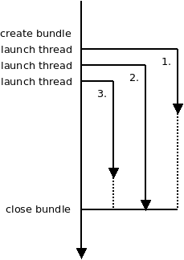
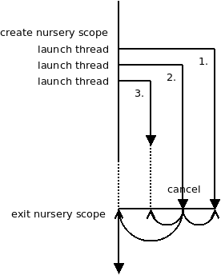
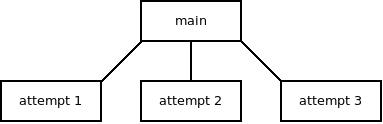
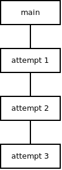

I am the author of libdill, a library that brings structured concurrency to C language. However, the concept of structured concurrency is still evolving and we haven't yet reached the final consensus on what's the right way of doing it.
To broaden my horizon, I've recently played with Trio), a library for strucutured concurrency in Python. Also, to be able to compare the two approaches I've implemented Happy Eyeballs algorithm (RFC 8305) using libdill, so that it can be compared to Trio's implementation. Unfortunately, Trio doesn't implement asynchronous DNS queries, which lead to some of the most interesting concurrent scenarios, but in spite of that the comparison highlighted some interesting differences between the two approaches. I am going to cover what I've learned in this article.
First, let's look at libdill's approach. It's a kind of old-school, boring approach that you would expect from a C library: When you want to execute code concurrently you create a bundle object. Bundle is a container to hold green threads. From the API perspective it looks very much like a thread pool. You can launch green threads (coroutines) in the bundle.
As for cancellation, threads as such have no identifiers so it's not possible to cancel a single thread. However, bundles do have handles that you can use to cancel all the threads in the bundle. The rationale for this design is that there can be arbitrary number of threads running in the bundle and this way the user doesn't have to keep track of all the threads, whether any particular thread has already terminated or not and so on. Instead, you manipulate the bundle as a single entity, irrespective of how many threads are running within it. And of course, there can be a single thread in the bundle, so in the end you can cancel a single thread, albeit in a somehow indirect way.

coroutine void worker(void) {
...
}
int main(void) {
int bndl = bundle();
bundle_go(bndl, worker());
bundle_go(bndl, worker());
bundle_go(bndl, worker());
hclose(bndl);
return 0;
}
The main idea of the design is the strict separation between the main thread (owner of the bundle) and the worker threads (running inside the bundle).
Trio's approach is different. The central idea of the design is that all the threads running concurrently are equal. There's no distinction between the main thread (or at least the part of it that runs in the particular scope) and the worker threads.
Technically, you open a "nursery" scope (nursery is Trio's equivalent of a thread bundle). Both the code in the nursery scope and the worker threads are considered to live in the nursery.
When the scope is about to close it waits for all the threads to finish. The main thread execution is resumed when that happens.
As for explicit cancellations, any thread can cancel the scope. That in turn causes each thread in the nursery to raise an exception, which bubbles to the top level and terminates all the threads. Once done, main thread can resume execution.

async def worker(nursery):
...
nursery.cancel_scope.cancel()
...
async with trio.open_nursery() as nursery:
nursery.start_soon(myfunc, nursery)
nursery.start_soon(myfunc, nursery)
nursery.start_soon(myfunc, nursery)
Now that we have the idea how both approaches work, let's look at the implementation of Happy Eyeballs algorithm. The algorithm is meant to create a TCP connection and deal with the case where the destination hostname resolves to multiple IP addresses. In simple terms, the algorithm starts connecting to the first IP address. If the connection is not yet established after 300ms it starts connecting to the second IP addresses. If none of the previous connection attempts succeeds in the next 300ms connection to the third address is attempted. And so on. Once any of the connection attempts succeeds all other attempts are canceled and the newly created connection is returned to the user.
Libdill's implementation has the main thread which launches a connection attempt and waits for 300ms to get a reply. If there's no reply it launches another attempt and waits for the reply from either of the two. After next 300ms it launches the third attempt and so on. Once it get a reply it cancels all the attempts and moves on.
The scenario very much matches the libdill diagram above.
Trio's approach is different. The main thread launches the first attempt and exits the nursery scope. This makes it wait until all the attempt threads exit.
The attempt thread waits for 300ms (this is skipped for the first attempt), then it launches another attempt thread and starts connecting to the first IP address. The second attempt, similarly, waits for 300ms, then launches the third attempt and starts connecting to the second IP address. And so on, until one of the attempts succeeds. When that happens the successful attempt saves the new connection and cancels the nursery. That in turn causes all other threads throw an exception which bubbles up to the top level, making the threads exit. When all threads exit the main thread can finally exit the nursery scope and return the saved connection to the user.
Once again, the scenario pretty much matches the Trio diagram above.
At this point I have to say that I like libdill's approach better. I am biased of course, libdill is my child after all, but let me explain.
First, Trio posits that all threads, including the main thread, are equal. But as we've already seen the main thread is special, even in Trio's implementation of Happy Eyeballs. It does different stuff. It is different semantically, but also syntactically — the main thread is the block of code inside the nursery scope, the attempt thread code is a separate async function.
That may be subliminally troubling, but not troubling enough to discard the design. What's more troubling though is the effect it has on ownership relations and encapsulation.
In libdill's implementation the ownership relations are unambiguous. Main thread owns all the attempt threads and that's it.

In Trio's implementation there are two different ways to think about the ownership.
If we define ownership as "whoever executes the nursery scope owns all the threads running in the nursery then the design is basically the same as in libdill: The main thread owns the attempt threads.
However, if we define ownership as "whoever launches a thread owns it" then we get a different picture: The main thread owns the first attempt thread. The first attempt thread owns the second attempt thread and so on.

This kind of ambiguity, I think, can be confusing.
But that still may not be a reason to discard the design. It's only a matter of mindset after all. The programmers should learn that the first definition of ownership is the correct one and the second one shouldn't be used at all.
But now we get to the matter of encapsulation and that's the thing that makes me feel really uncomfortable.
The thing is that any thread is a nursery gets complete control over the nursery. It can use it to launch new threads. It can cancel the entire shebang.
That breaks the assumptions I wanted to get from the structured concurrency in the first place:
When I call a function, I want to be ignorant about whether the function launches any threads internally or not. If it does it should cancel those threads before exiting. I, as a caller, want to be sure that there are no lingering threads afterward, running in the background and doing mischief. But once I pass the nursery as a parameter to a function, that assumption goes out of the window.
Same argument extends to cancellations. I may believe that as the main thread I am in full control of the worker threads and that those threads have no control over me, but once those threads have access to the nursery, they can cancel it and thus cancel myself. The control relationship becomes blurry.
All that being said, it seems to me that the problem is not a fundamental problem with Trio's design. What it really boils down to is that Trio's implementation of Happy Eyeballs uses nursery as a synchronization primitive. Main thread waits for the reply from attempt threads by exiting the nursery scope. And if you want to do that, the design of one attempt thread launching another naturally follows.
Libdill, on the other hand, can avoid that kind of thing because it uses Golang-style channels for synchronization among threads.
But it seems that addition of channels to Trio is being considered. Once the channels are available the Happy Eyeballs algorithm can be rewritten to use a simple "main thread owns all worker threads" model.
At that point, the topic of the two approaches to structured concurrency should be revisited.
October 31st, 2018